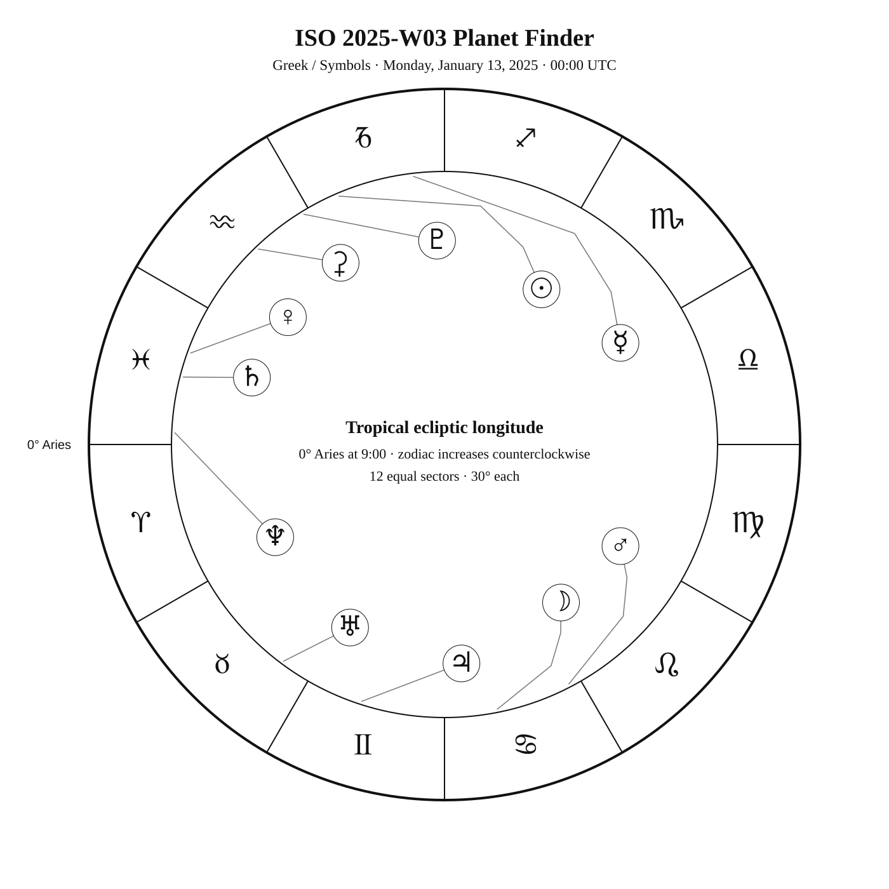
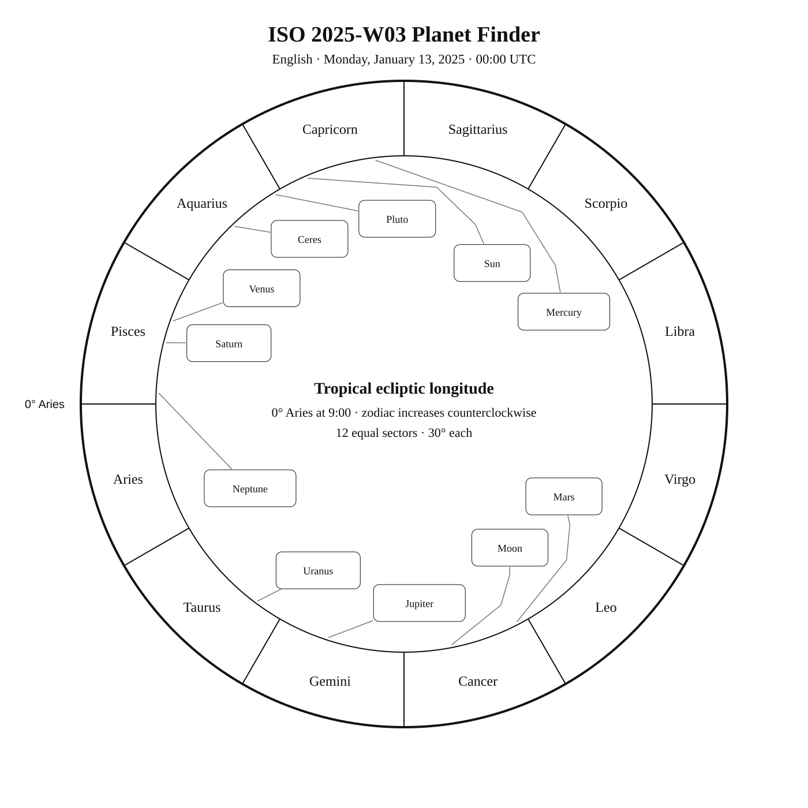
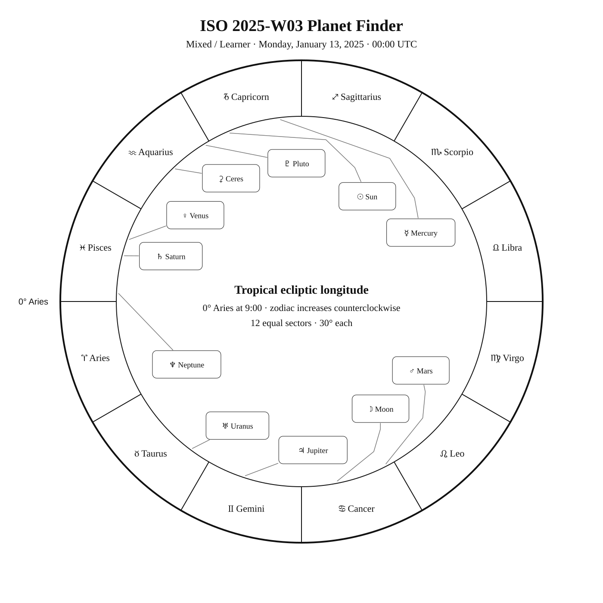

ISO 2025-W03
Week begins: Monday, January 13, 2025
Calendar
| Date | Zodiac day | Events |
|---|---|---|
| Mon, Jan 13, 2025 | ♑ 24 | 🌕 Full Moon · Moon After Yule — 22:26:55 UTC α Cae —  4 4.4 — Southern Winter 4 4.4 — Southern Winter |
| Tue, Jan 14, 2025 | ♑ 25 | β Cae — 5 5.0 — Southern Winter |
| Wed, Jan 15, 2025 | ♑ 26 | |
| Thu, Jan 16, 2025 | ♑ 27 | α Cam — 4 4.3 — Northern Winter |
| Fri, Jan 17, 2025 | ♑ 28 | |
| Sat, Jan 18, 2025 | ♑ 29 | β Men — 5 5.3 — Antarctic Winter |
| Sun, Jan 19, 2025 | ♒ 1 | ♒ Sun enters Aquarius — 20:00:07 UTC β Cam — 4 4.0 — Northern WinterFinest NGC 25 / NGC 1788 · vdB 33 —  — Tropical Winter — Tropical Winter |
Weekly Solar-System Ephemeris
Snapshot: Week begins January 13, 2025, 00:00 UTC.
(-90° to +90°; defaults +45°, 21:00 LAT)
| Body | ☉︎ | ☽︎ | ☿︎ | ♀︎ | ♂︎ | ♃︎ | ♄︎ |
|---|---|---|---|---|---|---|---|
| Ecliptic | ♑︎ 23°03′ β +0°00′ | ♋︎ 11°17′ β +4°56′ | ♑︎ 6°37′ β −0°28′ | ♓︎ 10°11′ β −0°24′ | ♋︎ 27°27′ β +4°15′ | ♊︎ 12°07′ β −0°34′ | ♓︎ 15°31′ β −1°57′ |
| Observing |  |  -12.5 -12.5 | ☉︎ | -4.6 | -1.4 | -2.7 | 1.1 |
| Rise | 07:27 | 14:59 | 06:30 | 09:38 | 16:28 | 13:26 | 09:58 |
| Set | 16:33 | 07:24 | 15:09 | 20:38 | 08:17 | 04:41 | 21:03 |
Extended targets:
| Body | ⚳︎ | ♅︎ | ♆︎ | ♇︎ |
|---|---|---|---|---|
| Ecliptic | ♒︎ 13°36′ β −7°03′ | ♉︎ 23°24′ β −0°15′ | ♓︎ 27°30′ β −1°17′ | ♒︎ 1°27′ β −3°17′ |
| Observing | 9.2 | 5.7 | 7.8 | ☉︎ |
| Rise | 09:13 | 12:24 | 10:20 | 08:16 |
| Set | 17:54 | 03:06 | 22:08 | 17:01 |
β = ecliptic latitude (+ north, − south).
Rise and set are Local Apparent Time for the selected latitude.
Naked-eye observing uses the Sun’s altitude at the selected Monday observer time: Daylight (Sun ≥ −0.833°), Civil twilight (−0.833° to −6°), Nautical twilight (−6° to −12°), Astronomical twilight (−12° to −18°), and Night (below −18°).
Solar Glare identifies a body too close to the Sun when the sky-state rule does not already supersede its naked-eye classification.
The Sun’s observing status uses this same five-state sky classification.
Planet Finder



Sky Notes
Kilroy: Sky Notes · generated 2026-10-23 03:07:45 UTC
ISO 2025-W03 runs from January 13 through January 19. Jupiter is about 2.3° in ecliptic longitude from Aldebaran in Taurus.

Naked eye: 🌕 Full Moon · Moon After Yule — 22:26:55 UTC. Bright moonlight favors prominent stars and planets while reducing contrast on faint deep-sky objects. No fixed-sky Calendar object is classified for naked-eye observing this week.

Planets: Moon: Naked eye; magnitude -12.5; direct motion; 98.8% illuminated. Monday 00:00 UTC snapshot. Opposition in ecliptic longitude Jan 13 22:27 UTC. Conjunction with Mars in ecliptic longitude Jan 14 03:47 UTC. Mercury: In solar glare; magnitude -0.4; direct motion; 89.8% illuminated. Monday 00:00 UTC snapshot. Venus: Naked eye; magnitude -4.6; direct motion; 49.5% illuminated. Below the horizon at 21:00 local apparent solar time, 45°N. Monday 00:00 UTC snapshot. Conjunction with Saturn in ecliptic longitude Jan 19 01:26 UTC. Mars: Naked eye; magnitude -1.4; retrograde motion; 99.9% illuminated. Monday 00:00 UTC snapshot. Opposition in ecliptic longitude Jan 16 02:38 UTC. Conjunction with Moon in ecliptic longitude Jan 14 03:47 UTC. Ceres: Telescope; magnitude 9.2; direct motion; 99.6% illuminated. Below the horizon at 21:00 local apparent solar time, 45°N. Monday 00:00 UTC snapshot. Jupiter: Naked eye; magnitude -2.7; retrograde motion; 99.6% illuminated. Monday 00:00 UTC snapshot. Saturn: Naked eye; magnitude 1.1; direct motion; 99.8% illuminated. Below the horizon at 21:00 local apparent solar time, 45°N. Monday 00:00 UTC snapshot. Conjunction with Venus in ecliptic longitude Jan 19 01:26 UTC. Uranus: Binoculars; magnitude 5.7; retrograde motion; 100.0% illuminated. Monday 00:00 UTC snapshot. Neptune: Telescope; magnitude 7.8; direct motion; 100.0% illuminated. Monday 00:00 UTC snapshot. Pluto: In solar glare; magnitude 14.5; direct motion; 100.0% illuminated. Monday 00:00 UTC snapshot.


Binoculars: Trace Caelum’s charted figure in the finder, then identify α Cae at its charted position. Trace Caelum’s charted figure in the finder, then identify β Cae at its charted position. Trace Camelopardalis’s charted figure in the finder, then identify α Cam at its charted position. Trace Mensa’s charted figure in the finder, then identify β Men at its charted position. Trace Camelopardalis’s charted figure in the finder, then identify β Cam at its charted position.
Small telescope: vdB 33: consult its dedicated finder and observing story for equipment guidance
Substantial telescope: No fixed-sky Calendar object is classified as requiring a substantial telescope this week.
Other objects listed this week: None
Mercury
Mercury: in solar glare at the Monday 00:00 UTC snapshot. Rises 06:30; sets 15:09 (45°N, local apparent solar time). Visual magnitude -0.4. The disk is 89.8% illuminated (gibbous). It is 16.4° from the Sun, on its west side. Motion is direct at 1.474° per day in ecliptic longitude at the snapshot. Position reference: Nunki, 6.8° away. Mercury: 6.8° from Nunki in the Pathfinder.
Venus
Venus: naked eye at the Monday 00:00 UTC snapshot. At 45°N and 21:00 local apparent solar time, it is 4.4° below the horizon. Rises 09:38; sets 20:38 (45°N, local apparent solar time). Visual magnitude -4.6. The disk is 49.5% illuminated (half-lit). It is 47.1° from the Sun, on its east side. Motion is direct at 1.000° per day in ecliptic longitude at the snapshot. Position reference: Sadalmelik, 12.8° away. Conjunction with Saturn in ecliptic longitude Jan 19 01:26 UTC. Venus: 12.8° from Sadalmelik in the Pathfinder.
Moon
Moon: naked eye at the Monday 00:00 UTC snapshot. At 45°N and 21:00 local apparent solar time, it is 58.9° above the horizon. Rises 14:59; sets 07:24 (45°N, local apparent solar time). Visual magnitude -12.5. The disk is 98.8% illuminated (waxing gibbous). It is 167.3° from the Sun, on its east side. Motion is direct at 13.719° per day in ecliptic longitude at the snapshot. Position reference: Castor, 10.6° away. Opposition in ecliptic longitude Jan 13 22:27 UTC. Conjunction with Mars in ecliptic longitude Jan 14 03:47 UTC. Moon: 10.6° from Castor in the Pathfinder.
Mars
Mars: naked eye at the Monday 00:00 UTC snapshot. At 45°N and 21:00 local apparent solar time, it is 44.8° above the horizon. Rises 16:28; sets 08:17 (45°N, local apparent solar time). Visual magnitude -1.4. The disk is 99.9% illuminated (nearly full). It is 173.9° from the Sun, on its west side. Motion is retrograde at 0.399° per day in ecliptic longitude at the snapshot. Position reference: Pollux, 4.6° away. Opposition in ecliptic longitude Jan 16 02:38 UTC. Conjunction with Moon in ecliptic longitude Jan 14 03:47 UTC. Mars: 4.6° from Pollux in the Pathfinder.
Jupiter
Jupiter: naked eye at the Monday 00:00 UTC snapshot. At 45°N and 21:00 local apparent solar time, it is 66.6° above the horizon. Rises 13:26; sets 04:41 (45°N, local apparent solar time). Visual magnitude -2.7. The disk is 99.6% illuminated (nearly full). It is 139.1° from the Sun, on its east side. Motion is retrograde at 0.074° per day in ecliptic longitude at the snapshot. Position reference: Aldebaran, 5.3° away. Jupiter: 5.3° from Aldebaran in the Pathfinder.
Saturn
Saturn: naked eye at the Monday 00:00 UTC snapshot. At 45°N and 21:00 local apparent solar time, it is 0.1° below the horizon. Rises 09:58; sets 21:03 (45°N, local apparent solar time). Visual magnitude 1.1. The disk is 99.8% illuminated (nearly full). It is 52.5° from the Sun, on its east side. Motion is direct at 0.090° per day in ecliptic longitude at the snapshot. Position reference: Fumalsamakah, 11.5° away. Conjunction with Venus in ecliptic longitude Jan 19 01:26 UTC. Saturn: 11.5° from Fumalsamakah in the Pathfinder.
Uranus
Uranus: binoculars at the Monday 00:00 UTC snapshot. At 45°N and 21:00 local apparent solar time, it is 59.0° above the horizon. Rises 12:24; sets 03:06 (45°N, local apparent solar time). Visual magnitude 5.7. The disk is 100.0% illuminated (nearly full). It is 120.4° from the Sun, on its east side. Motion is retrograde at 0.015° per day in ecliptic longitude at the snapshot. Position reference: Menkar, 15.1° away. Uranus: 15.1° from Menkar in the Pathfinder.
Neptune
Neptune: telescope at the Monday 00:00 UTC snapshot. At 45°N and 21:00 local apparent solar time, it is 11.2° above the horizon. Rises 10:20; sets 22:08 (45°N, local apparent solar time). Visual magnitude 7.8. The disk is 100.0% illuminated (nearly full). It is 64.5° from the Sun, on its east side. Motion is direct at 0.020° per day in ecliptic longitude at the snapshot. Position reference: Fumalsamakah, 13.4° away. Neptune: 13.4° from Fumalsamakah in the Pathfinder.
Ceres
Ceres: telescope at the Monday 00:00 UTC snapshot. At 45°N and 21:00 local apparent solar time, it is 31.4° below the horizon. Rises 09:13; sets 17:54 (45°N, local apparent solar time). Visual magnitude 9.2. The disk is 99.6% illuminated (nearly full). It is 21.7° from the Sun, on its east side. Motion is direct at 0.385° per day in ecliptic longitude at the snapshot. Position reference: Dabih, 14.8° away. Ceres: 14.8° from Dabih in the Pathfinder.
Pluto
Pluto: in solar glare at the Monday 00:00 UTC snapshot. Rises 08:16; sets 17:01 (45°N, local apparent solar time). Visual magnitude 14.5. The disk is 100.0% illuminated (nearly full). It is 9.0° from the Sun, on its east side. Motion is direct at 0.032° per day in ecliptic longitude at the snapshot. Position reference: Dabih, 8.4° away. Pluto: 8.4° from Dabih in the Pathfinder.
Highlights
Mercury
In solar glare; magnitude -0.4; direct motion; 89.8% illuminated. Monday 00:00 UTC snapshot. Mercury: 6.8° from Nunki in the Pathfinder.
Venus
Naked eye; magnitude -4.6; direct motion; 49.5% illuminated. Below the horizon at 21:00 local apparent solar time, 45°N. Monday 00:00 UTC snapshot. Conjunction with Saturn in ecliptic longitude Jan 19 01:26 UTC. Venus: 12.8° from Sadalmelik in the Pathfinder.
Moon
Naked eye; magnitude -12.5; direct motion; 98.8% illuminated. Monday 00:00 UTC snapshot. Opposition in ecliptic longitude Jan 13 22:27 UTC. Conjunction with Mars in ecliptic longitude Jan 14 03:47 UTC. Moon: 10.6° from Castor in the Pathfinder.
Mars
Naked eye; magnitude -1.4; retrograde motion; 99.9% illuminated. Monday 00:00 UTC snapshot. Opposition in ecliptic longitude Jan 16 02:38 UTC. Conjunction with Moon in ecliptic longitude Jan 14 03:47 UTC. Mars: 4.6° from Pollux in the Pathfinder.
Jupiter
Naked eye; magnitude -2.7; retrograde motion; 99.6% illuminated. Monday 00:00 UTC snapshot. Jupiter: 5.3° from Aldebaran in the Pathfinder.
Saturn
Naked eye; magnitude 1.1; direct motion; 99.8% illuminated. Below the horizon at 21:00 local apparent solar time, 45°N. Monday 00:00 UTC snapshot. Conjunction with Venus in ecliptic longitude Jan 19 01:26 UTC. Saturn: 11.5° from Fumalsamakah in the Pathfinder.
Uranus
Binoculars; magnitude 5.7; retrograde motion; 100.0% illuminated. Monday 00:00 UTC snapshot. Uranus: 15.1° from Menkar in the Pathfinder.
Neptune
Telescope; magnitude 7.8; direct motion; 100.0% illuminated. Monday 00:00 UTC snapshot. Neptune: 13.4° from Fumalsamakah in the Pathfinder.
Ceres
Telescope; magnitude 9.2; direct motion; 99.6% illuminated. Below the horizon at 21:00 local apparent solar time, 45°N. Monday 00:00 UTC snapshot. Ceres: 14.8° from Dabih in the Pathfinder.
Pluto
In solar glare; magnitude 14.5; direct motion; 100.0% illuminated. Monday 00:00 UTC snapshot. Pluto: 8.4° from Dabih in the Pathfinder.